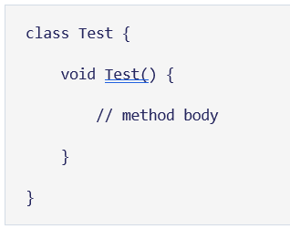
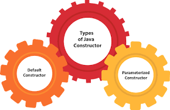
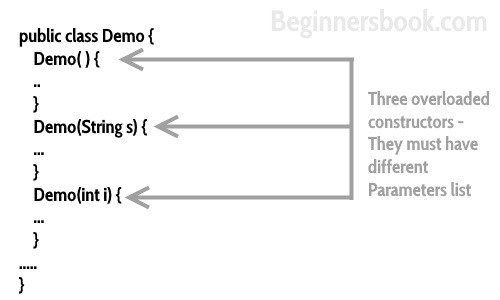
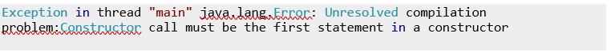
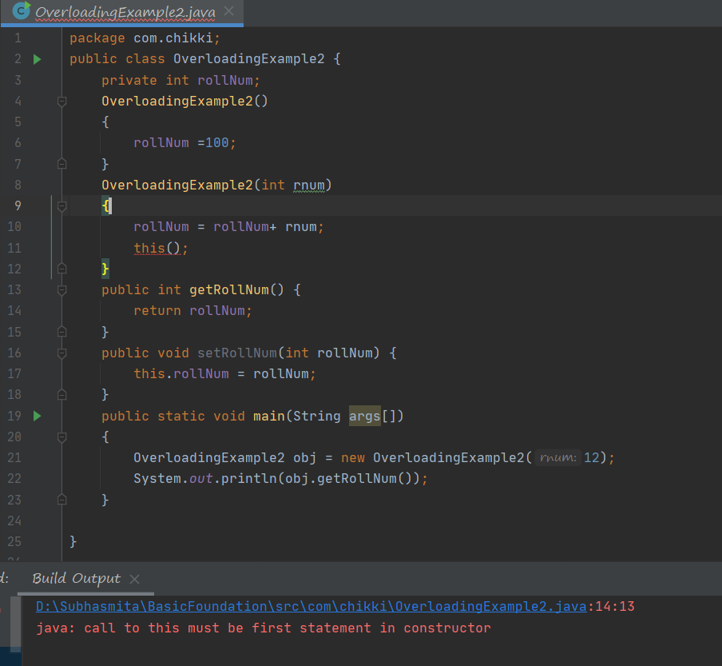
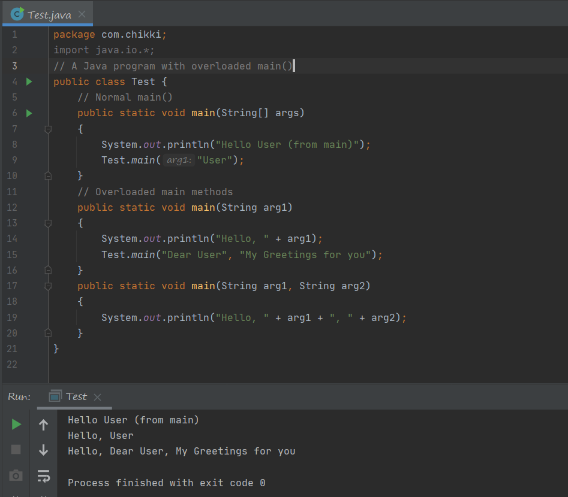
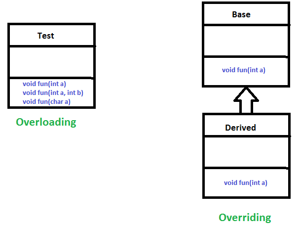
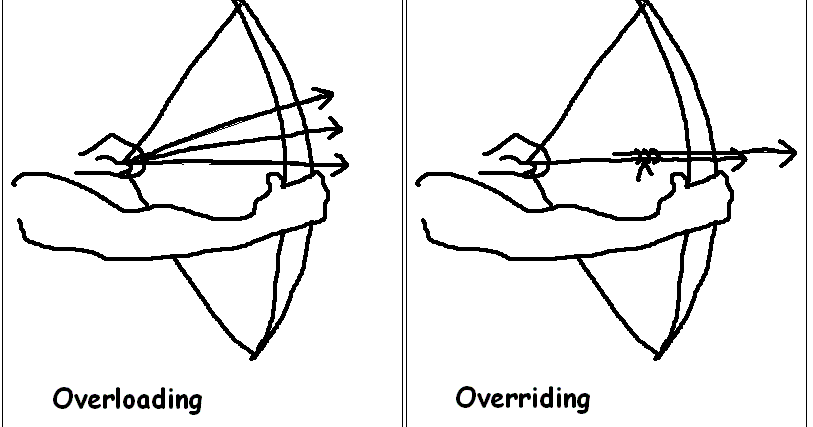

Constructor Overloading
Just a quick overview of what a constructor is before moving onto constructor overloading.
Constructor ⚙️
In Java, every class has its constructor that is invoked automatically when an object of the class is created.
A constructor is similar to a method but in actual, it is not a method.
A Java method and Java constructor can be differentiated by its name and return type.
A constructor has the same name as that of class and it does not return any value.
For example,

Here, Test() is a constructor.
It has the same name as that of the class and doesn't have a return type.

Here, Test() has the same name as that of the class. However, it has a return type void. Hence, it's a method, not a constructor.
Types of constructors

1)No-Arg Constructor(may or may not have any arguments)
2)Default Constructor(the no-arg constructor created during run-time by java compiler )
3)Parameterized constructor(passing parameters to a contructor )
Constructor Overloading Definition
Constructor overloading is a concept of having more than one constructor with different parameters list, in such a way so that each constructor performs a different task.
(Sounds similar to method overloading right? But it’s different let’s figure that out with examples )
For e.g. Add class has 4 types of constructors. If you do not want to specify the initial capacity and capacity increment then you can simply use default constructor of Add class like this Add A = new Add();
however if you need to specify the capacity and increment then you call the parameterized constructor of Add class with two int arguments like this: Add v= new Add(10, 5);
This snippet makes the obove more clear:

Let’s jump into the code for more clarity and understanding 💻
In the above example, we have two constructors: public Company() and public Company(String domainName).
Here, both the constructor are initializing the variable domainName with different values. Hence, based on the value we want, we can call the constructor from the main() method.
Note that, we have used this keyword to specify the variable of the class.
Let’s understand the role of this () in constructor overloading
As you can see in the above program that we called the parameterized constructor during object creation.
Since we have this() placed in parameterized constructor, the default constructor got invoked from it and initialized the variable rollNum.
Exceptional Cases ⚠️
We may sometimes encounter a compilation error while using this keyword during a constructor overloading.

Program gave a compilation error⚠️
Reason: this() should be the first statement inside a constructor.
Example:

Method Overloading and null error☠️ in Java
In Java it is very common to overload methods. Below is an interesting Java program.

The reason why we get compile time error in the above scenario is, here the method arguments Integer and String both are not primitive data types in Java.
That means they accept null values. When we pass a null value to the method1 the compiler gets confused which method it has to select, as both are accepting the null.
This compile time error wouldn’t happen unless we intentionally pass null value. For example see the below scenario which we follow generally while coding.
In the above scenario if the “arg” value is null due to the result of the expression,
then the null value is passed to method1. Here we wouldn’t get compile time error because we are specifying that the argument is of type Integer,
hence the compiler selects the method1(Integer i) and will execute the code inside that.
Note: This problem wouldn’t persist when the overriden method arguments are primitive data type. Because the compiler will select the most suitable method and execute it.
Some ✔️Facts About Overloading in Java
We cannot overload two methods in Java if they differ only by static keyword (number of parameters and types of parameters is same).
However, Like other static methods, we can overload main() in Java.
Example:

Java Does not support Operator Overloading Explicitly
Unlike C++, Java doesn’t allow user-defined overloaded operators. However, Internally Java overloads operators, for example, + is overloaded for concatenation.
Short Explanation of the difference between Overloading and Overriding
- Overloading is about same function have different signatures.
- Overriding is about same function, same signature but different classes connected through inheritance.


- Overloading is an example of compiler time polymorphism and overriding is an example of run time polymorphism.
Thank You!❤️